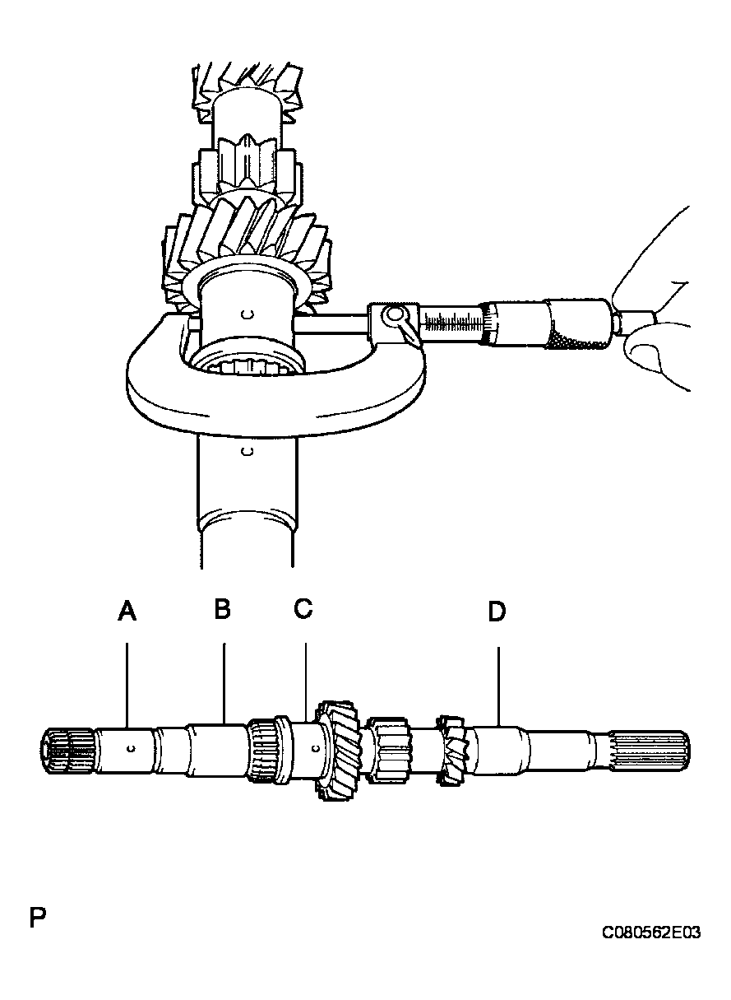
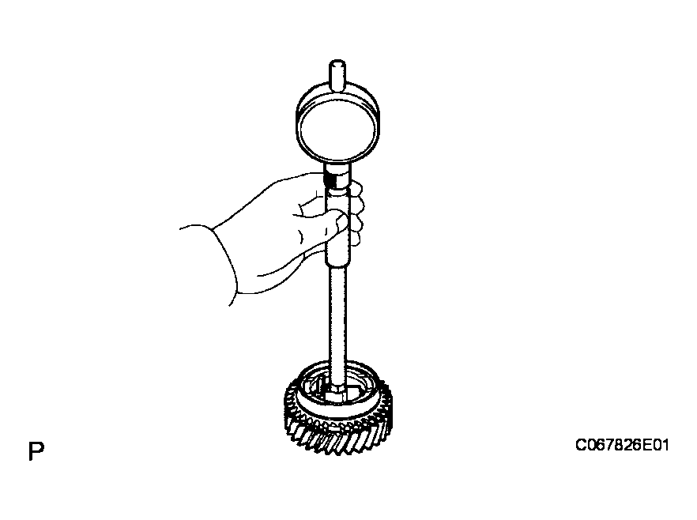
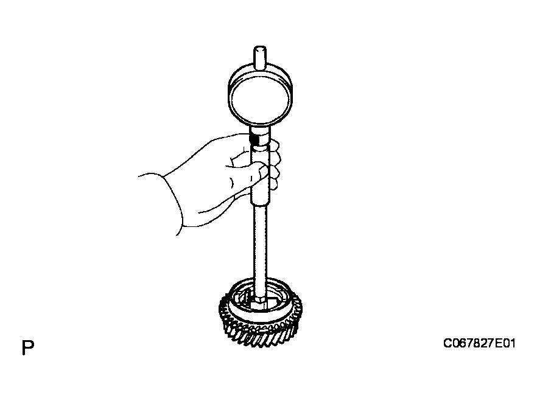
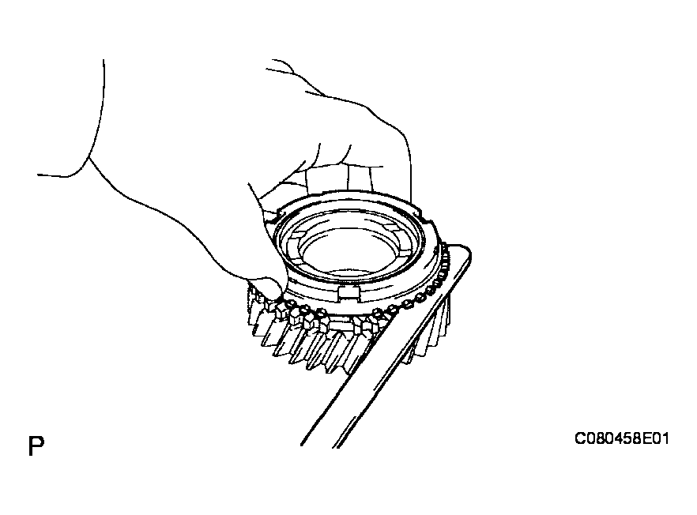
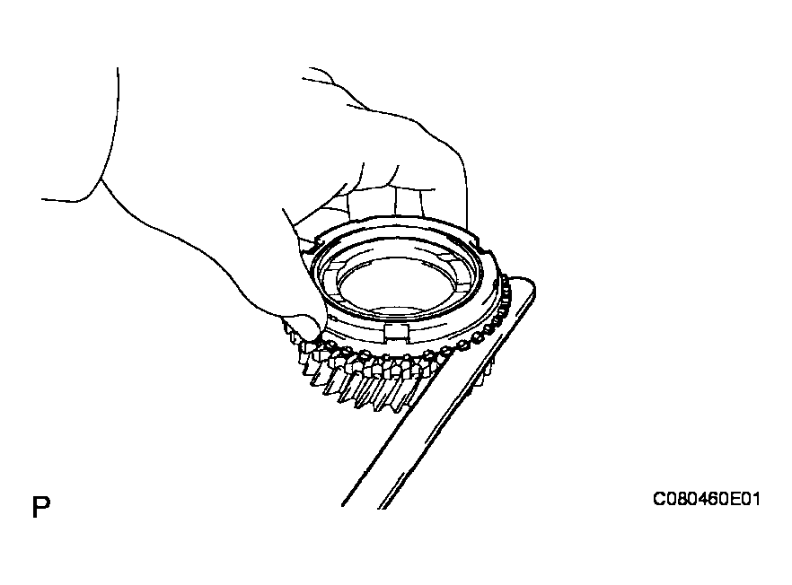
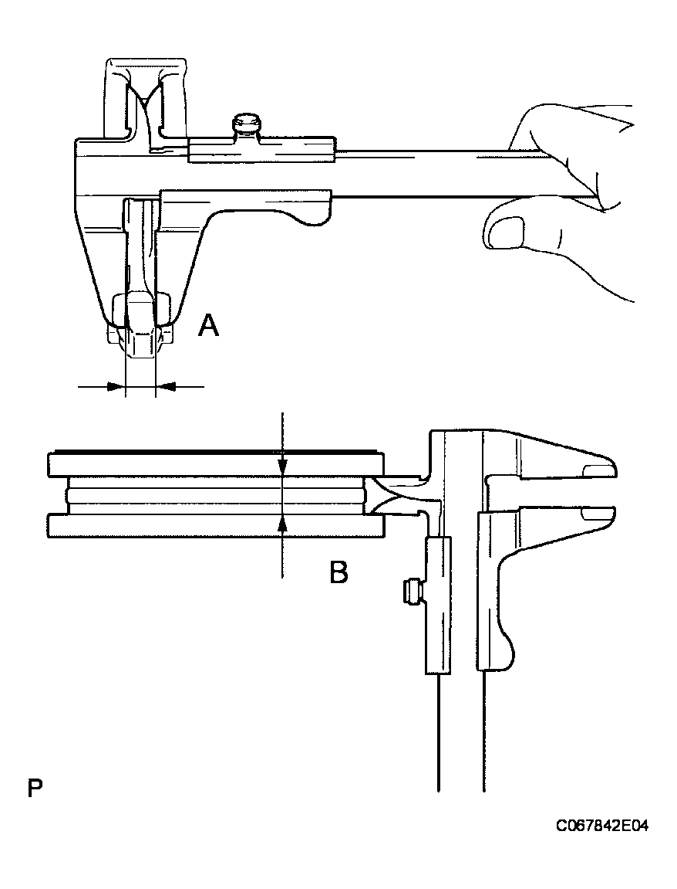

Input Shaft: Inspection
- INSPECT INPUT SHAFT
- Using a dial indicator, measure the input shaft runout.
Maximum runout: 0.015 mm (0.0006 in.)
If the runout is greater than the maximum, replace the input shaft.
- Using a micrometer, measure the diameter of the input shaft journal surface.

Courtesy of © TOYOTA, LICENSE AGREEMENT TMS1002Standard diameter
DIAMETER REFERENCEJournal Position Specified Condition A 24.885 to 24.900 mm (0.9797 to 0.9803 in.) B 28.991 to 29.006 mm (1.1414 to 1.1420 in.) C 30.985 to 31.000 mm (1.2198 to 1.2204 in.) D 24.985 to 25.000 mm (0.9836 to 0.9842 in.) Minimum diameter
DIAMETER REFERENCEJournal Position Specified Condition A 24.885 mm (0.9797 in.) B 28.991 mm (1.1414 in.) C 30.985 mm (1.2198 in.) D 24.985 mm (0.9836 in.) If the diameter is less than the minimum, replace the input shaft.
- Using a dial indicator, measure the input shaft runout.
- INSPECT 4TH GEAR
- Using a cylinder gauge, measure the inside diameter.

Courtesy of © TOYOTA, LICENSE AGREEMENT TMS1002Standard inside diameter: 34.015 to 34.031 mm (1.3391 to 1.3398 in.)
Maximum inside diameter: 34.031 mm (1.3398 in.)
If the inside diameter is greater than the maximum, replace the 4th gear.
- Using a cylinder gauge, measure the inside diameter.
- INSPECT 3RD GEAR
- Using a cylinder gauge, measure the inside diameter.

Courtesy of © TOYOTA, LICENSE AGREEMENT TMS1002Standard inside diameter: 36.015 to 36.031 mm (1.4179 to 1.4185 in.)
Maximum inside diameter: 36.031 mm (1.4185 in.)
If the inside diameter is greater than the maximum, replace the 3rd gear.
- Using a cylinder gauge, measure the inside diameter.
- INSPECT NO. 2 SYNCHRONIZER RING (for 4th Gear)
- Check for wear or damage.
- Coat the 4th gear cone with gear oil. Turn the synchronizer ring in one direction while pushing it against the 4th gear cone. Check that the ring locks. If the synchronizer outer ring does not lock, replace the ring or 4th gear.
- Using a feeler gauge, measure the clearance between the No. 2 synchronizer ring and 4th gear with the No. 2 synchronizer ring contacting the cone of the 4th gear.Fig 6: Measuring Clearance Between Synchronizer Ring And Gear With Synchronizer Ring Contacting Cone Of Gear

Courtesy of © TOYOTA, LICENSE AGREEMENT TMS1002Standard clearance: 0.75 to 1.65 mm (0.0295 to 0.0649 in.)
Minimum clearance: 0.75 mm (0.0295 in)
If the clearance is less than the minimum, replace the synchronizer ring.
- INSPECT NO. 2 SYNCHRONIZER RING (for 3rd Gear)
- Check for wear or damage.
- Coat the 3rd gear cone with gear oil. Turn the synchronizer ring in one direction while pushing it against the 3rd gear cone. Check that the ring locks. If the synchronizer outer ring does not lock, replace the ring or 3rd gear.
- Using a feeler gauge, check the clearance between the No. 2 synchronizer ring and 3rd gear with the No. 2 synchronizer ring contacting the cone of the 3rd gear.Fig 8: Checking Clearance Between Synchronizer Ring And Gear With Synchronizer Ring Contacting Cone Of Gear

Courtesy of © TOYOTA, LICENSE AGREEMENT TMS1002Standard clearance: 0.75 to 1.65 mm (0.0295 to 0.0650 in.)
Minimum clearance: 0.75 mm (0.0295 in)
If the clearance is less than the minimum, replace the synchronizer ring.
- INSPECT NO. 2 TRANSMISSION HUB SLEEVE
- Check the sliding condition between the No. 2 transmission hub sleeve and No. 2 transmission clutch hub.
- Check that the spline gear edges of the No. 2 transmission hub sleeve are not worn down.
- Using a vernier caliper, measure the width of the No. 2 transmission hub sleeve groove (B) and the thickness of the claw part on the No. 2 gear shift fork (A), and calculate the clearance.

Courtesy of © TOYOTA, LICENSE AGREEMENT TMS1002Standard clearance: B - A = 0.15 to 0.35 mm (0.0059 to 0.0137 in.)
If the clearance is not within the specification, replace the No. 2 transmission hub sleeve and No. 2 gear shift fork.